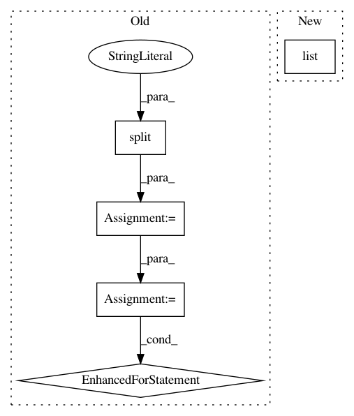

4163c4eb8cffd43b05931100fa2dd807a3b19fbb,examples/utils/tf_records_generation.py,,main,#Any#,97
Before Change
////// for test
writer = tf.python_io.TFRecordWriter(FLAGS.test_rd_path)
grouped = split(test_df, "filename")
for group in grouped:
tf_example = create_tf_example(group, test_dir)
writer.write(tf_example.SerializeToString())
writer.close()
output_test = op.join(os.getcwd(),FLAGS.test_rd_path)
print("Successfully created the TFRecords: {}".format(output_test))
After Change
tf_train = tf_array[0: split_index]
tf_test = tf_array[split_index, :]
print("You have {} training tiles and {} test tiles ready".format(
len(set(list(tf_train[:,1]))), len(set(list(tf_test[:,1])))))
tiles_dir = op.join(os.getcwd(), "tiles")
train_dir = op.join(os.getcwd(), "images", "train")
test_dir = op.join(os.getcwd(), "images", "test")
In pattern: SUPERPATTERN
Frequency: 3
Non-data size: 5
Instances
Project Name: developmentseed/label-maker
Commit Name: 4163c4eb8cffd43b05931100fa2dd807a3b19fbb
Time: 2018-01-26
Author: geospatialanalystyi@gmail.com
File Name: examples/utils/tf_records_generation.py
Class Name:
Method Name: main
Project Name: googledatalab/pydatalab
Commit Name: 2137c84c95286a1c888140cf425c27ff087271bb
Time: 2017-04-21
Author: brandondutra@google.com
File Name: solutionbox/structured_data/mltoolbox/_structured_data/preprocess/local_preprocess.py
Class Name:
Method Name: run_numerical_categorical_analysis
Project Name: scipy/scipy
Commit Name: 9fcb5a8ef300cc14c54e9f2633142f7b5e2ca53f
Time: 2015-07-05
Author: pav@iki.fi
File Name: tools/refguide_check.py
Class Name:
Method Name: main